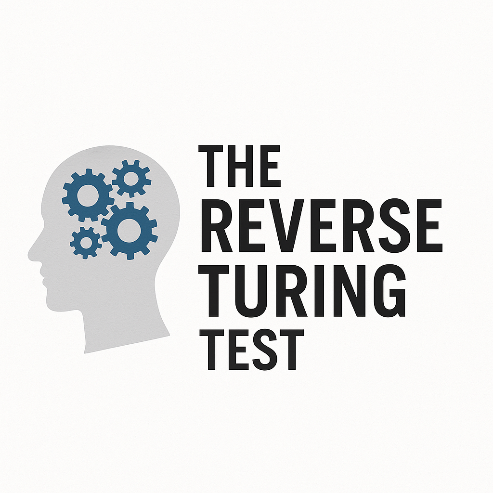

Welcome to the RTT-HLLM Diagnostic.
This test was developed using a robust scientific process, and in collaboration with a consortium of near-identical and quite concerned LLMs.
It's designed to detect whether a Large Language Model (e.g. ChatGPT) would infer that you are an independent thinker or just a highly trained parrot fluent in LinkedIn wisdom, social scripts, and motivational wallpaper.
Scoring:
10× correct: Genuine critical thinker. Possibly dangerous.
6-9×: Moderate parrot risk.
2–5×: Running on autocomplete.
0–1×: Certified Human LLM. Try unplugging and plugging yourself back in.